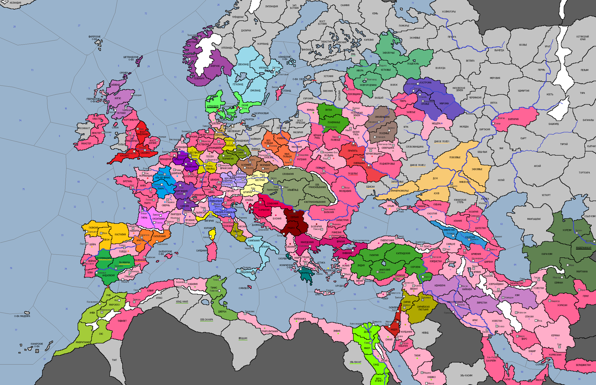

<== | 0 | | 1 | | 2 | | 3 | | 4 | | 5 | ==>

Великая схизма 1135 года.
Избрание Римским Папой Иннокентия II на безальтернативной основе 'взорвало' католический мир. В новом понтифике видели ставленника Франции, что делало Рим марионеткой Франции. В этой ситуации на авансцену выходит Анаклет II, которого часть католиков признают 'правильным' Папой. [В заявке на след. ход игроки-католики указывают, к лагерю какой из сторон они примыкают. До момента смерти Иннокентия II оба лагеря могут начинать войны друг с другом по КБ. Анаклетианцы не уплачивают и оставляют себе церковный налог, идущий в Рим. Иннокентианцы получают +1% Благочестия в ход]
· По сообщениям славянских хроник XII века в литовских лесах процветали языческие ритуалы оборотничества, при которых, входя в экстатическое состояние через танцы и употребление отваров, местные жители начинали считать себя волками или медведями [Язычество принимает догмат Эзотерика]
· Император СРИ Домиано I Красивый в 1135 г. женится на самой завидной невесте мира – герцогине Иерусалимской Мелисенде, беря тем самым под защиту империи христианские владения в Палестине.
· Имперский сейм, собранный в Кёльне, дарует Имперские привилегии Ганзейскому союзу и передаёт ему права на г. Кёльн. Жители Кёльна встретили такое решение императора градом камней и ругательными выражениями на верхнегерманском языке. Решение Сейма обескуражило и Папу Римского Иннокентия II, который лишился столицы вассального архиепископства.
· Ещё при жизни пророка Мухаммеда очистительное подаяние (закят) был установлен как один из «столпов веры». Фатимидские правители XII века узаконили эту практику в пользу государства [в Шиизме вводится догмат Закят]
· Фридрих Шлегель – новый синдик Ганзейского союза.
· Родос под напором увещеваний с запада, выходит из-под подчинения Византийской империи. Остров, как удобный транзитный путь на Ближний Восток хотят сделать своей базой рыцарские ордена католиков.
· В Дании вспыхивает восстание религиозных католиков, недовольных проводимой королём Магнусом I Добрым политики в области церкви. Экстренно реагируя, король лично участвует в закладке новой церкви в Сконе, однако мятежники к этому времени успевают захватить Ютландию и столицу страны.
· Новый правитель Хорезма Ил-Арслан I отправляется в хадж к далёкой Мекке, где ему приходит мысль пригласить к себе страну учёных-правоверов и учредить мазхаб Ханафитов. В обратной дороге от тяжело заболевает. А на родине голодные рабы Мавераннахра поднимают восстание.
· Эпидемия проказы свирепствует на половине территории Бургундии.
· Из Сицилийского королевства по обвинению в распространении бургундской проказы, указом короля Рожера III изгоняются евреи.
· Баны Далмации провозгласили независимость от Венецианской республики. Поводом для этого послужило принятие дожем Лоренцо ди Стефано православия как государственной религии республики.
· Войска Месуда I освобождают г. Эдессу от мятежников.
· В Тунисе основан мазхаб Сухравардия. Усиленная темнокожими малийскими копейщиками, армия эмир Хасана аш-Шарифа захватывает Улад Наил.
· Волна еврейских изгнаний докатилась до Франции…
· Киевское княжество объявляет войну Подолью и начинает платить символическую дань половцам, чтобы те не мешали их расширению на юг. Мстислав Великий разгоняет местное подольское ополчение и без потерь возвращается назад.
· Магнус I Мореход – новый король Норвегии.
· Владислав I Локоток взошёл на трон Польши.
· Султан сельджуков Ахмад Санджар начинает поддерживать мазхаб Маликитов, активно помогавших работе его государственных чиновников.
· Новгородцы захватывают земли Еми, тесня чухонские племена на север.
· Королевство Кастилии и Леона возобновляет Реконкисту после нескольких десятилетий относительного затишья в отношениях с соседями-мусульманами. Король Альфонсо VII переходит в брод реку Тахо и вторгается в Эстремадуру. Генеральное сражение состоялось у Калатравы в Ла-Манче, где мавры смогли устроить засаду наступавшим христианам. Но силы были очень не равны. Войско мусульман отступило в г.Кордова.
· В Сарагосу прибывает миссия рыцарей-храмовников из Палестины и орден получает официальную прописку в Арагоне. По примеру правителей других стран король Мартин I изгоняет евреев, считавшейся самой крупной диаспорой Европы. Арагон также вступает в войну против мусульман Иберии, избрав противником Валенсию. В 1135 году, войска Беренгера де Молы наносят поражение армии валенсийского эмира.
· Основаны новые города: Пешт (Венгрия), Абердин (Шотландия)